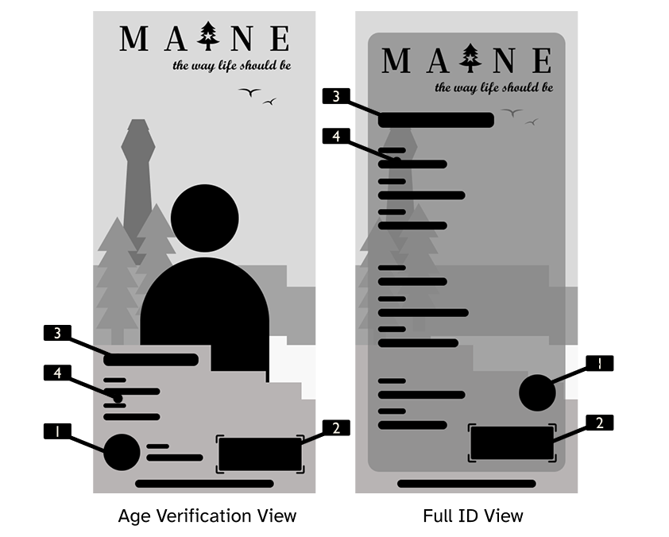
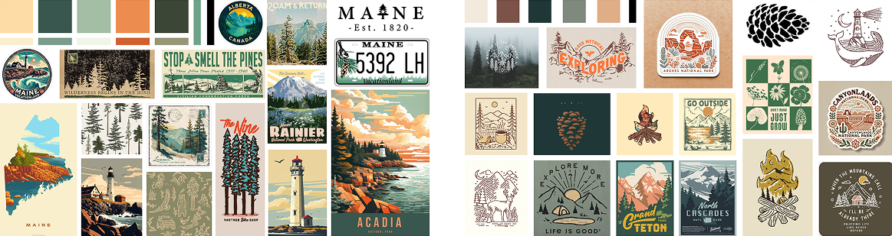
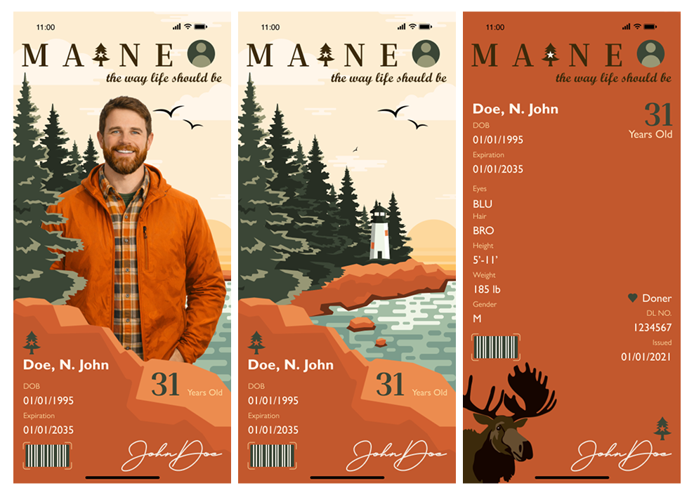
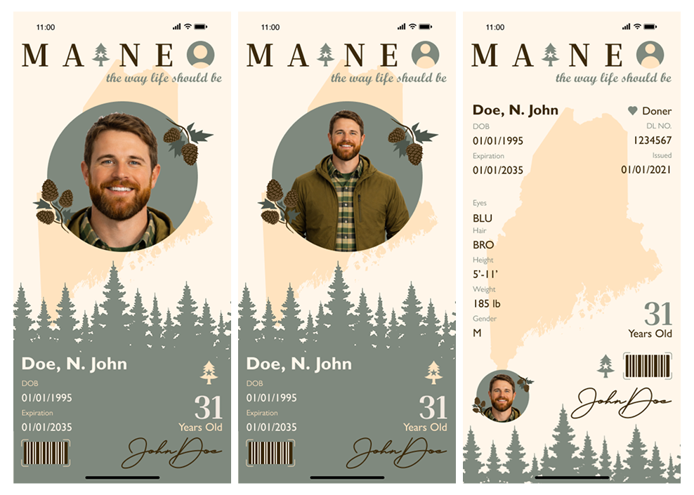
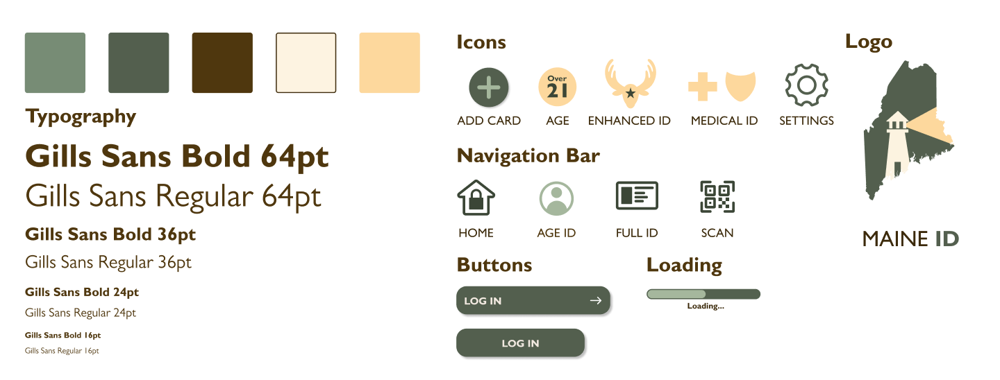
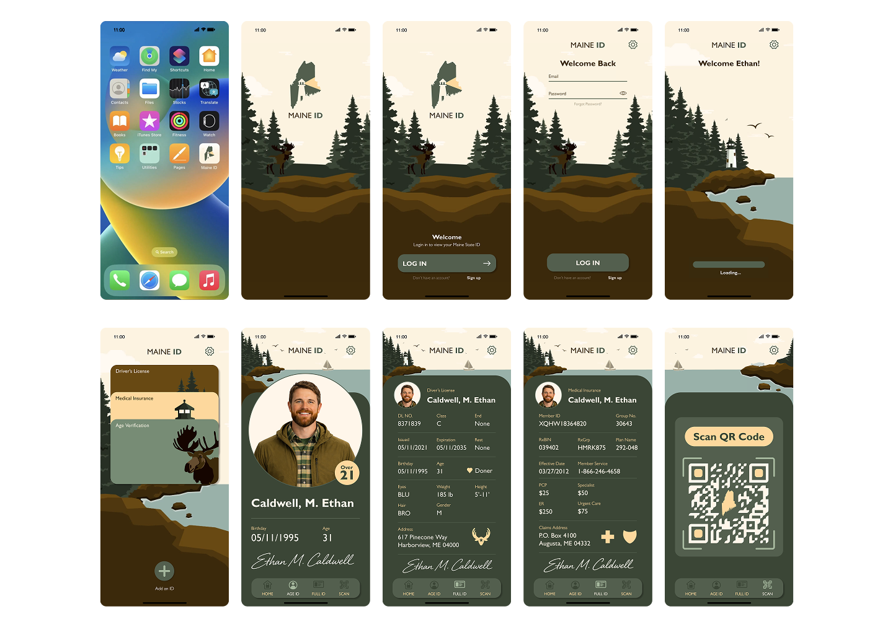

DIGITAL IDENTIFICATION
A mobile app designing a digital identification platform for the state of Maine.
01 // PROJECT GOALS
To create a digital replacement for state of Maine ID cards that users can carrying easily on phone, while maintaining an organic and approachable visual identity relative to the state of Maine's scenic landscape and heritage.
02 // WIREFRAMES & GRID SYSTEM
WIRE FRAME NOTES
- 9 Screen Mobile Navigation
- Detailed Documentation Process
- 12 Column Screen Grid Layout
- Accessibility First Hierarchy
IPHONE 15 - GRID SYSTEM
- 3 Columns: Margin 16, Gutter 16
- 12 Columns: Margin 16, Gutter 12
- Form Data Grid: Height 8, Gutter 8, Offset 56

03 // VISUAL EXPLORATION
Explored two distinct visual directions to balance utility with Maine's state identity:

STYLE 1: POSTCARD
A cozy, nostalgic feel with illustrated land elements and rich warm tones.
STYLE 2: LINE ART
Vector lines paired with minimal color schemes and modern contrast overlays.


04 // BRANDING SYSTEM
Typography set in Gills Sans Bold (36pt) and Gills Sans Regular (16pt) paired with custom iconography, state vector logos, and tactile navigation components.

05 // FINAL UI INTERFACE

06 // KEY TAKEAWAYS
- Design Before Illustrating: Designing the main information hierarchy allowed creating a better frame layout before building custom graphics to fit the badge.
- Complementary Visuals: Illustration must not be distracting; it should sit comfortably behind text content without breaking interface legibility.
- Source Inspiration Early: Finding inspiration prior to beginning execution helped resolve vector scaling challenges smoothly during mid-fidelity iterations.
KEEP EXPLORING THE ARCHIVE
See more of my work in UI/UX, branding, print, and packaging design.
[ TRANSMISSION_CHANNEL ]
[✉] suplickiabby@gmail.com ➔ [✆] (716) 220-6374 ➔ LINKEDIN_PROFILE ➔ RESUME_DOWNLOAD ➔